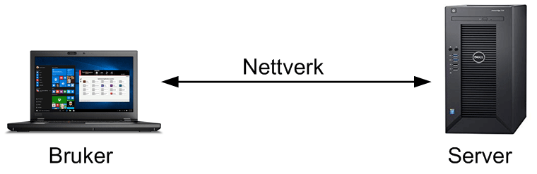

Internett er eit nettverk som koblar datamaskinar samman slik at dei kan kommunisera med kvarandre, men for å skjønne dette, må vi vetta kva eit "Nettverk" er. Det blir dannet nettverk nemlig når to eller fleire datamaskinar blir koblet samman. Det enklaste nettverket vi kan få til er å koble maskinar, og vi kan få meir kompliserte nettverk ved å kobla fleire maskinar samman. I tillegg til nettverk har vi noe som kalles for "Klienter" og "Tjenere". Hovedsakelig dei datamaskinane og mobiltelefonane som vi brukar kalles for klienter, på engelsk "clients", og dei maskinane som lagrer informasjon vi søker kalles for tjenere, eller "servers" på engelsk. Men for at tjenere og klienter skal kunne kommunisera med hverandre, må dei bruke samme regler. Det vil sei at uten reglar kan ikkje maskinane forstå kvarandre. Dei reglane blir kalt for protokoller.
På bilde oppforbi ser vi eit enkelt bilde som viser oss hva eit "nettverk" er. Det viser oss at nettverk er bare ein kobling mellom 2 maskiner. I tillegg ser vi på bilde ein tjener og klient. Som vi ser er bærbar datamaskin ein klient eller bruker som det blir sagt på bilde. Det vil at det er bærbar pc som søker etter informasjon. Og den stasjonære datamaskinen blir til tjener, eller server som det blir kalt på bilde. Det vil sei at den stasjonære datamaskinen lagrer informasjon som klienter spør etter.
Først og fremst, før eg begynner å forklare hvordan internett virker, vil eg vise eit video som viser hvordan internett fungerer og hvor mykje har det å sei mellom kommunikasjon i heile verden.
Denne lille video på 20 sekund viser oss heile hovedpeonge med internette og hvordan det fungerer. Enkelt sagt så fungerer internett på denne måten at fleire maskiner kobler til ein hovedkilde og på denne måten kan alle som er kobla til kommunisera sammen ved å bruke dei samme "protokoller" som eg nevnte i stad. Hvis vi går lengre inn i detaljer, finner me ut at det er mykje meir komplisert enn det høres ut som. Heile koblingen, eller prosessen starter med at klienten sender ein forespørsel til tjeneren om eit bilde som klienten ønsker å se. Denne forespørselen blir sendt i form av pakken til tjeneren. Da tjeneren mottar pakken, deler tjeneren deg som oftast inn i fleire små pakker, slik at dei pakkene kan den raskeste veien til klienten. Denne prosessen har mange steg, men blir gjort på noen få sekunder, uansett hvor klienter er i verden.
I Tilleg til dei to viktigste protokolla, har vi også ein som er ein av dei viktigste tjenestene på Internett. Protokollen hetter "Hypertext Transfer Protocol" og den har ansvar for at verdensveven eller "linken" til nettsiden fungerer. HTTP sørger nemlig for at nettlesere hos klienten kan kommunisera med tjeneren. Protokollen fungerer på den måten at vi skriver inn ein adressa i nettlesaren vårt og den kobler oss vidare til tjeneren og sender ein HTTP-forespørsel. Denna forespørselen inneholder informasjon om hva klienten har spørt om.
| Navn på Norsk | Navn på Engelsk | Forkortelse |
|---|---|---|
| Tjenere | Servers | Ingen |
| Klienter | Clients | Ingen |
| Internett Protokoll | Internet Protocol | IP |
| Overførings Kontroll Protokoll | Transmission Control Protocol | TCP |
| Overføring av Hypertekst Protokoll | Hypertext Transfer Protocol | HTTP |